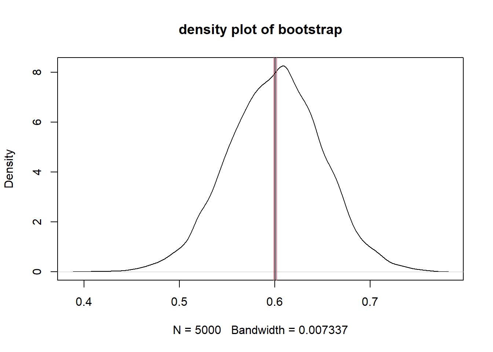

4 Week 4
Topics: Functions and sampling
This week's topics are functions and sampling, the latter including a cursory treatment of loops and bootstrapping.
4.1 Environments
Functions exist in environments, which are "frames" or collections containing objects including variables, functions, etc.). There is a global environment (.GlobalEnv) that contains all of the data, functions, in the current R session. Those objects can be enumerated with the ls() function.
The reason environments are mentioned at this time is because functions instantiate environments that exist while the function is running. More on this in a bit....
4.2 Functions
Functions are sets of statements in R that are grouped together to perform a specific task or set of tasks. Functions are either built in, included in packages, or user-defined. Functions are used mainly to simplify running a series of individual commands or functions, for situations where the same process will need to be run multiple times on different inputs, or when control structures are needed (e.g., looping, logical branching).
4.2.1 Function Components
The different parts of a function are:
- (Usually) Name: This is the actual name of the function. It is stored in an R environment as an object with this name.
- (Optional) Arguments: Arguments specify the inputs or options to the function. When a function is invoked, you pass a value to the argument. Arguments are optional; that is, a function may contain no arguments. Also arguments can have default values.
- Body: The function body contains a collection of statements that defines what the function does.
- Return value: The return value of a function is the last expression in the function body to be evaluated.
Another important concept for functions is environments.
4.2.1.1 Name
Most functions are created with code of the form
function_name <- function(argument(s)){
statement(s)
}For example, to square a vector of numerical values:
f_square <- function(x){
x^2
}the function name is f_square.
Some functions are not named, and are referred to as "anonymous" functions. For example, functions can be used within the apply family of functions. Here is an oprationalized example.
# create a list of three vectors of random numbers of different random lengths
# set.seed() makes the random process reproducible.
set.seed(10)
# vector lengths
v.len <- rnorm(n = 3, mean = 30, sd = 10) %>% round(0)
# make the random vectors
set.seed(5)
v1 <- rnorm(n = v.len[1])
set.seed(3)
v2 <- rnorm(n = v.len[2])
set.seed(6)
v3 <- rnorm(n = v.len[3])
# create the list
L <- list(v1, v2, v3)
# get the first value from each vector in the list
lapply(X = L, FUN = function(x) {x[1]})## [[1]]
## [1] -0.8408555
##
## [[2]]
## [1] -0.9619334
##
## [[3]]
## [1] 0.269606The last line of the code chunk is:
lapply(X = L, FUN = function(x) {x[1]})
in which the body of the function is x[1], i.e., obtain the first element of a vector. But the function itself is not named, and hence "anonymous."
4.2.1.2 Arguments
Most functions require arguments. Arguments are used to instantiate variables within the function's environment that can be used later in the body of the function. Each argument is named, and the name is used within the function as a local variable within the function's environment.
Following our example from above, f_square takes an argument named "x" that is a numeric vector.
Here, let's modify the function to demonstrate that within the environment of the function, x is a variable:
f_square_2 <- function(x){
message("input:")
print(x)
message("output:")
x^2
}
f_square_2(c(1,2,3))## input:## [1] 1 2 3## output:## [1] 1 4 9We can try running the function using different (or no) arguments:
Here, using a vector of a single NA numeric
f_square(as.numeric(NA))## [1] NA... or a vector that contains a numeric NA:
f_square(c(1, 2, NA))## [1] 1 4 NA... or a null:
f_square(NULL)## numeric(0)... or a vector containing a null:
f_square(c(1, 2, NULL))## [1] 1 4... or with no argument at all:
f_square()## Error in f_square() : argument "x" is missing, with no defaultSome functions do not require arguments, e.g., to get the current date or time:
Sys.Date()## [1] "2021-03-06"Sys.time()## [1] "2021-03-06 12:23:29 PST"... and if we try to use an argument we get an error:
Sys.Date(1)## Error in Sys.Date(1) : unused argument (1)4.2.1.2.1 Default values for arguments
If you want an argument to have a default value, it is specified in the listed arguments in the form argument = value. Following our previous f_square_2() function, we can modify to print the input based on the logical argument verbose:
f_square_3 <- function(x, verbose = FALSE){
# only run the next lines if verbose is true
if(verbose){
message("input:")
print(x)
message("output:")
}
x^2
}Here we run with the default verbose option (FALSE):
f_square_3(x = c(1, 2, 3))## [1] 1 4 9... and with verbose = TRUE:
f_square_3(x = c(1, 2, 3), verbose = TRUE)## input:## [1] 1 2 3## output:## [1] 1 4 9A more meaningful example demonstrates stratification of counts into intensity bins using accelerometry data. We will be using accelerometry from one day's data from one subject in a study.
The cut points for accelerometry were identified at 0, 2690, 6167, and 9642 counts per minute, from Sasaki et al. (2011).
__Sasaki JE, John D, Freedson PS. Validation and comparison of ActiGraph activity monitors. J Sci Med Sport. 2011;14(5):411-416. doi:10.1016/j.jsams.2011.04.003__
The variable vm3 is the vector magnitude measured with the accelerometer for each minute. Data: accelerometry.csv.
acc <- read.csv("files/accelerometry.csv")
head(acc)## time_acc vm3
## 1 2018-09-13 02:59:00-07 0
## 2 2018-09-13 02:58:00-07 0
## 3 2018-09-13 02:57:00-07 0
## 4 2018-09-13 02:56:00-07 0
## 5 2018-09-13 02:55:00-07 0
## 6 2018-09-13 02:54:00-07 0The following function codes intensity by the aforementioned cut points by default and using default labels:
f_acc_intensity <- function(x,
cuts = c(-Inf, 2690, 6167, 9642, Inf),
labels = c("sedentary/low", "moderate", "vigorous", "very vigorous")){
cut(x = acc$vm3, breaks = cuts, labels = labels)
}... and when run with the defaults to tabulate the minutes spent in different PA levels
acc$intens_default <- f_acc_intensity(acc$vm3)
table(acc$intens_default)##
## sedentary/low moderate vigorous very vigorous
## 1435 4 1 0But we could run this with different thresholds and levels, where SPLA = "sedentary/low physical activity" and MVPA = "moderate-to-very vigorous physical activity):
acc$intens_2lev <- f_acc_intensity(x = acc$vm3,
cuts = c(-Inf, 2690, Inf),
labels = c("SLPA", "MVVPA"))
table(acc$intens_2lev)##
## SLPA MVVPA
## 1435 54.2.1.2.2 The ... argument
When functions do not have a known a priori number or set of arguments, or when a large number of arguments is to be passed to another function the ... argument is used. We will not cover this but you are encouraged to read more: How to Use the Dots Argument in R; The three-dots construct in R.
4.2.1.3 Body
The function's body contains all of the code to perform the purpose of the function. Following our initial example, the body of the function is simply
x^2The body can be as simple or complicated as it needs to be in order to achieve the desired result.
4.2.1.4 Return value
The return value is either the last evaluated expression in the function or an object specified using the return() function.
In our original f_square() function, the return value is x^2 since no other return() value was specified, e.g., for a vector of one element:
f_square <- function(x){
x^2
}
f_square(3)## [1] 9or a vector with multiple elements:
f_square(c(1,2,3))## [1] 1 4 9An simple example of explicitly specifying return values is shown in this numerical comparison function:
f_compare <- function(x, y){
# either missing?
if(nargs() != 2)
return("invalid number of arguments")
# numeric?
if(!is.numeric(x) | !is.numeric(y)){
return(sprintf("%s or %s is not numeric.", x, y))
}
# comparisons follow
if(x > y){
return(sprintf("%s is greater than %s", x, y))
}
if(x < y) {
return(sprintf("%s is less than %s", x, y))
}
if(x == y){
return(sprintf("%s equals %s", x, y))
}
}If you want to handle an expected error, you can print an informative message and use return(invisible()), which returns nothing at all (whereas return() results in a NULL) e.g., here without invisible():
f_readfile <- function(fname){
if(!file.exists(fname)){
warning(paste(fname, "does not exist!"))
return()
} else {
read.csv(fname)
}
}
f_readfile("foobar.txt")## Warning in f_readfile("foobar.txt"): foobar.txt does not exist!## NULL... and with invisible():
f_readfile <- function(fname){
if(!file.exists(fname)){
warning(paste(fname, "does not exist!"))
return(invisible())
} else {
read.csv(fname)
}
}
f_readfile("foobar.txt")## Warning in f_readfile("foobar.txt"): foobar.txt does not exist!4.2.1.5 Function environments
As mentioned before, functions instantiate environments that exist only while the function is being evaluated. This means that functions can include named variables that have the same name as a variable in a different environment. For example here is a function that only lists what objects are in the local and global environments:
# declare a few variables
x <- 1
y <- "hello"
# a simple function
f <- function(x){
# create a local variable
y <- x + 2
# another function inside this function
g <- function(x){
x * 3
}
# what variables are in this environment?
print("----------")
print("objects in this function's environment:")
print(ls())
# what is in the global env?
print("----------")
print("objects in the global environment:")
print(ls(envir = .GlobalEnv))
# return the output of the function
print("----------")
y
}
f(1)## [1] "----------"
## [1] "objects in this function's environment:"
## [1] "g" "x" "y"
## [1] "----------"
## [1] "objects in the global environment:"
## [1] "a" "acc" "age_jane" "age_john"
## [5] "ages" "bins" "bins2" "BMI"
## [9] "boston_zip" "census_vars" "ci_95" "cmd"
## [13] "csvfname" "csvsize" "ctdat" "d"
## [17] "dat" "dat_1" "dat_sub" "dat_sub_sel"
## [21] "dtafname" "excel_fname" "f" "F"
## [25] "f_acc_intensity" "f_compare" "f_readfile" "f_square"
## [29] "f_square_2" "f_square_3" "figure_nums" "fname"
## [33] "fnames" "foo" "fstfname" "fstsize"
## [37] "g" "i" "inc" "income"
## [41] "income_factor" "iris_summary" "ja" "jo"
## [45] "l" "L" "labels" "m"
## [49] "m1" "m2" "m3" "my_zip"
## [53] "mystr" "mytext" "myUrl" "n"
## [57] "n_fnames" "normvec1000" "p" "pal"
## [61] "pal2" "pb" "pop" "s"
## [65] "sqlc" "states_5" "subjects" "sum_health_white_afram"
## [69] "t" "tabhealth_afram" "tabhealth_white" "table_nums"
## [73] "tbs" "tempdirfiles" "tmp" "tmpdir"
## [77] "txt" "urls" "v" "v.len"
## [81] "v1" "v2" "v3" "vals"
## [85] "x" "X" "xlsclip" "y"
## [89] "zip_bad" "zip_good" "zipfile"
## [1] "----------"## [1] 3Once the function completes, all objects in its local environment are purged. If you are running a complicated function that creates intermediate values that you want to examine for troubleshooting, this kind of thing can be done, to assign a variable with a specific value to a different environment created specifically for examining the intermediate products of the function:
# create an environment for holding intermediate objects created in the function run
foo <- new.env()
g <- function(x){
# code for a bunch of complicated operations
# ...
# generates an intermediate data frame named "bar"
bar <- head(iris)
# save to the other env
assign(x = "bar", value = bar, envir = foo)
# more code to do more complicated stuff
# ...
foobar <- head(cars)
# assign this too
assign(x = "foobar", value = foobar, envir = foo)
# yet more complicated stuff here
# ...
}When the function runs, the objects bar and foobar are placed in the foo environment. We can examine those:
# run the function
g()
# what is in envornment "foo"?
ls(envir = foo)## [1] "bar" "foobar"And we can view their values:
print(foo$bar)## Sepal.Length Sepal.Width Petal.Length Petal.Width Species
## 1 5.1 3.5 1.4 0.2 setosa
## 2 4.9 3.0 1.4 0.2 setosa
## 3 4.7 3.2 1.3 0.2 setosa
## 4 4.6 3.1 1.5 0.2 setosa
## 5 5.0 3.6 1.4 0.2 setosa
## 6 5.4 3.9 1.7 0.4 setosaprint(foo$foobar)## speed dist
## 1 4 2
## 2 4 10
## 3 7 4
## 4 7 22
## 5 8 16
## 6 9 104.3 Sampling
The general topic of sampling is far greater than what we can cover in this course. However, a few examples may be helpful for students who have little experience in sampling.
The main R function for sampling is sample(), which draws a random sample from a vector or data frame. Options for sample() include the size of the sample, whether or not to replace sampled individuals to the pool, and a probability weight of the same length (or number of rows) as the population from which the sample is drawn.
4.3.1 Sampling with replacement
Sampling with replacement is similar to rolling a die. Each roll of the die has a 1/6 probability of coming up with each value. For example:
# create a vector to represent the faces of a die
d <- 1:6
# now make a sample of 100,000 rolls of the die
s <- sample(x = d, size = 100000, replace = TRUE)
# tabulate the result
(tbs <- table(s))## s
## 1 2 3 4 5 6
## 16391 16931 16557 16728 16609 16784# proportions
(prop.table(tbs))## s
## 1 2 3 4 5 6
## 0.16391 0.16931 0.16557 0.16728 0.16609 0.16784The probability of rolling two of the same number in a row is 1/6 \(\times\) 1/6, or \(\approx\) 0.028
4.3.2 Sampling without replacement
Sampling without replacement removes from the population the individual that was sampled. For example, the probability of selecting an ace from a whole deck of cards is 4/52, or \(\approx\) 0.077. If we drew once from the deck and returned the card back to the deck to draw again, both samples would be independent. The probability of drawing two aces would be 4/52 \(\times\) 4/52, or \(\approx\) 0.0059. That is an example of sampling with replacement.
Performing the same sample without replacement, i.e., finding an ace, removing it, and then sampling again would have a probability of drawing two aces being 4/52 \(\times\) 3/51, or \(\approx\) 0.0045.
For a population of sufficient size relative to the sample, sampling with or without replacement will lead to nearly identical results.
Let's use an example of a population of 50,000 persons, where 30,000 are female and 20,000 are male. If we were to sample two persons with replacement, the probability that they would both be female would be 30000/50000 \(\times\) 30000/50000, or 0.36.
If we sample without replacement, the probability of selecting a female in the first sample of one would be 30000/50000, and the second sample of 1 would have a probability of selecting a female 29999/49999, with a joint probability of \(\approx\) 0.359995.
4.3.3 Bootstrapping
Bootstrapping is used to estimate the characteristics of a population by repeating a large number of random samples (with replacement) and then calculating summary statistics on the set of samples. The reason replacement is used is that each sample represents a "snapshot" of the population. As the number of samples increases, the summary continues to approach the true population characteristics.
We will use a simple example from our previously created hypothetical population. If we had no idea what the male/female split was, we could generate a large number of small-is samples and the take the mean.
Here we will use an R loop. A loop is constructed using the form
for (element in set){
do something
}A few simple examples follow.
Print each letter in the first 5 letters of the alphabet. In this example, the iterated element is a letter. The built in vector letters is used:
for (i in head(letters, 5)){
print(i)
}## [1] "a"
## [1] "b"
## [1] "c"
## [1] "d"
## [1] "e"A similar approach, but using a numerical index:
states_5 <- head(state.name, 5)
for (i in 1:length(states_5)){
s <- states_5[i]
print(s)
}## [1] "Alabama"
## [1] "Alaska"
## [1] "Arizona"
## [1] "Arkansas"
## [1] "California"The bootstrap will use 5,000 samples of size 100 from our hypothetical population to estimate the proportion of females.
# create the population
# 1 indicates female and 0 indicates male
pop <- c(rep(1, 5e4 * 3 / 5), rep(0, 5e4 * 2 / 5))
# initialize a vector
F <- NULL
# run the bootstrap
for (i in seq(from = 1, to = 5000, by = 1)){
# sample once
s <- sample(x = pop, size = 100, replace = TRUE)
# calculate percent female
p <- sum(s) / length(s)
# concatenate the result with the running result
F <- c(F, p)
}
# mean and standard deviation of the bootstrap
mean(F)## [1] 0.600582sd(F)## [1] 0.04883276Using the bootstrap results, we can estimate the 95% confidence interval around the mean using the Rmisc::CI() function, and make a density plot showing the mean and the confidence interval.
# 95% CI
ci_95 <- Rmisc::CI(x = F, ci = 0.95)
# plot with 95 % CI
plot(density(F), main = "density plot of bootstrap")
abline(v = ci_95, col=c(2,1,2))
If we already had an enumeration of the population, this method would be unnecessary. However, most survey-derived data are generated from samples. If the sample is representative of the underlying population, the sample can be considered an acceptable proxy.
Source code for this document
# Week 4 {#week4}
```{r, echo=FALSE, warning=FALSE, message=FALSE}
library(tidyverse)
library(magrittr)
library(knitr)
library(kableExtra)
library(readstata13)
```
<h2>Topics: Functions and sampling</h2>
This week's topics are functions and sampling, the latter including a cursory treatment of loops and bootstrapping.
## Environments
Functions exist in `environments`, which are "frames" or collections containing objects including variables, functions, etc.). There is a global environment (`.GlobalEnv`) that contains all of the data, functions, in the current R session. Those objects can be enumerated with the `ls()` function.
The reason environments are mentioned at this time is because functions instantiate environments that exist while the function is running. More on this in a bit....
## Functions
Functions are sets of statements in R that are grouped together to perform a specific task or set of tasks. Functions are either built in, included in packages, or user-defined. Functions are used mainly to simplify running a series of individual commands or functions, for situations where the same process will need to be run multiple times on different inputs, or when control structures are needed (e.g., looping, logical branching).
### Function Components
The different parts of a function are:
1. (Usually) Name: This is the actual name of the function. It is stored in an R environment as an object with this name.
1. (Optional) Arguments: Arguments specify the inputs or options to the function. When a function is invoked, you pass a value to the argument. Arguments are optional; that is, a function may contain no arguments. Also arguments can have default values.
1. Body: The function body contains a collection of statements that defines what the function does.
1. Return value: The return value of a function is the last expression in the function body to be evaluated.
Another important concept for functions is environments.
#### Name
Most functions are created with code of the form
```
function_name <- function(argument(s)){
statement(s)
}
```
For example, to square a vector of numerical values:
```{r}
f_square <- function(x){
x^2
}
```
the function name is `f_square`.
Some functions are not named, and are referred to as "anonymous" functions. For example, functions can be used within the `apply` family of functions. Here is an oprationalized example.
```{r}
# create a list of three vectors of random numbers of different random lengths
# set.seed() makes the random process reproducible.
set.seed(10)
# vector lengths
v.len <- rnorm(n = 3, mean = 30, sd = 10) %>% round(0)
# make the random vectors
set.seed(5)
v1 <- rnorm(n = v.len[1])
set.seed(3)
v2 <- rnorm(n = v.len[2])
set.seed(6)
v3 <- rnorm(n = v.len[3])
# create the list
L <- list(v1, v2, v3)
# get the first value from each vector in the list
lapply(X = L, FUN = function(x) {x[1]})
```
The last line of the code chunk is:
```
lapply(X = L, FUN = function(x) {x[1]})
```
in which the body of the function is `x[1]`, i.e., obtain the first element of a vector. But the function itself is not named, and hence "anonymous."
#### Arguments
Most functions require arguments. Arguments are used to instantiate variables within the function's environment that can be used later in the body of the function. Each argument is named, and the name is used within the function as a local variable within the function's environment.
Following our example from above, `f_square` takes an argument named "x" that is a numeric vector.
Here, let's modify the function to demonstrate that within the environment of the function, `x` is a variable:
```{r}
f_square_2 <- function(x){
message("input:")
print(x)
message("output:")
x^2
}
f_square_2(c(1,2,3))
```
We can try running the function using different (or no) arguments:
Here, using a vector of a single NA numeric
```{r}
f_square(as.numeric(NA))
```
... or a vector that contains a numeric NA:
```{r}
f_square(c(1, 2, NA))
```
... or a null:
```{r}
f_square(NULL)
```
... or a vector containing a null:
```{r}
f_square(c(1, 2, NULL))
```
... or with no argument at all:
```
f_square()
```
<font color="red">
```
## Error in f_square() : argument "x" is missing, with no default
```
</font>
Some functions do not require arguments, e.g., to get the current date or time:
```{r}
Sys.Date()
Sys.time()
```
... and if we try to use an argument we get an error:
```
Sys.Date(1)
```
<font color="red">
```
## Error in Sys.Date(1) : unused argument (1)
```
</font>
##### Default values for arguments
If you want an argument to have a default value, it is specified in the listed arguments in the form `argument = value`. Following our previous `f_square_2()` function, we can modify to print the input based on the logical argument `verbose`:
```{r, collapse=TRUE}
f_square_3 <- function(x, verbose = FALSE){
# only run the next lines if verbose is true
if(verbose){
message("input:")
print(x)
message("output:")
}
x^2
}
```
Here we run with the default `verbose` option (`FALSE`):
```{r}
f_square_3(x = c(1, 2, 3))
```
... and with `verbose = TRUE`:
```{r}
f_square_3(x = c(1, 2, 3), verbose = TRUE)
```
A more meaningful example demonstrates stratification of counts into intensity bins using accelerometry data. We will be using accelerometry from one day's data from one subject in a study.
The cut points for accelerometry were identified at 0, 2690, 6167, and 9642 counts per minute, from Sasaki et al. (2011).
__Sasaki JE, John D, Freedson PS. Validation and comparison of ActiGraph activity monitors. J Sci Med Sport. 2011;14(5):411-416. doi:10.1016/j.jsams.2011.04.003__
The variable `vm3` is the vector magnitude measured with the accelerometer for each minute. Data: [accelerometry.csv](files/accelerometry.csv).
```{r}
acc <- read.csv("files/accelerometry.csv")
head(acc)
```
The following function codes intensity by the aforementioned cut points by default and using default labels:
```{r}
f_acc_intensity <- function(x,
cuts = c(-Inf, 2690, 6167, 9642, Inf),
labels = c("sedentary/low", "moderate", "vigorous", "very vigorous")){
cut(x = acc$vm3, breaks = cuts, labels = labels)
}
```
... and when run with the defaults to tabulate the minutes spent in different PA levels
```{r}
acc$intens_default <- f_acc_intensity(acc$vm3)
table(acc$intens_default)
```
But we could run this with different thresholds and levels, where SPLA = "sedentary/low physical activity" and MVPA = "moderate-to-very vigorous physical activity):
```{r}
acc$intens_2lev <- f_acc_intensity(x = acc$vm3,
cuts = c(-Inf, 2690, Inf),
labels = c("SLPA", "MVVPA"))
table(acc$intens_2lev)
```
##### The `...` argument
When functions do not have a known _a priori_ number or set of arguments, or when a large number of arguments is to be passed to another function the `...` argument is used. We will not cover this but you are encouraged to read more: [How to Use the Dots Argument in R](https://www.dummies.com/programming/r/how-to-use-the-dots-argument-in-r/); [The three-dots construct in R](https://www.r-bloggers.com/2013/01/the-three-dots-construct-in-r/).
#### Body
The function's body contains all of the code to perform the purpose of the function. Following our initial example, the body of the function is simply
```
x^2
```
The body can be as simple or complicated as it needs to be in order to achieve the desired result.
#### Return value
The return value is either the last evaluated expression in the function or an object specified using the `return()` function.
In our original `f_square()` function, the return value is `x^2` since no other `return()` value was specified, e.g., for a vector of one element:
```{r}
f_square <- function(x){
x^2
}
f_square(3)
```
or a vector with multiple elements:
```{r}
f_square(c(1,2,3))
```
An simple example of explicitly specifying return values is shown in this numerical comparison function:
```{r}
f_compare <- function(x, y){
# either missing?
if(nargs() != 2)
return("invalid number of arguments")
# numeric?
if(!is.numeric(x) | !is.numeric(y)){
return(sprintf("%s or %s is not numeric.", x, y))
}
# comparisons follow
if(x > y){
return(sprintf("%s is greater than %s", x, y))
}
if(x < y) {
return(sprintf("%s is less than %s", x, y))
}
if(x == y){
return(sprintf("%s equals %s", x, y))
}
}
```
If you want to handle an expected error, you can print an informative message and use `return(invisible())`, which returns nothing at all (whereas `return()` results in a `NULL`) e.g., here without `invisible()`:
```{r}
f_readfile <- function(fname){
if(!file.exists(fname)){
warning(paste(fname, "does not exist!"))
return()
} else {
read.csv(fname)
}
}
f_readfile("foobar.txt")
```
... and with `invisible()`:
```{r}
f_readfile <- function(fname){
if(!file.exists(fname)){
warning(paste(fname, "does not exist!"))
return(invisible())
} else {
read.csv(fname)
}
}
f_readfile("foobar.txt")
```
#### Function environments
As mentioned before, functions instantiate environments that exist only while the function is being evaluated. This means that functions can include named variables that have the same name as a variable in a different environment. For example here is a function that only lists what objects are in the local and global environments:
```{r}
# declare a few variables
x <- 1
y <- "hello"
# a simple function
f <- function(x){
# create a local variable
y <- x + 2
# another function inside this function
g <- function(x){
x * 3
}
# what variables are in this environment?
print("----------")
print("objects in this function's environment:")
print(ls())
# what is in the global env?
print("----------")
print("objects in the global environment:")
print(ls(envir = .GlobalEnv))
# return the output of the function
print("----------")
y
}
f(1)
```
Once the function completes, all objects in its local environment are purged. If you are running a complicated function that creates intermediate values that you want to examine for troubleshooting, this kind of thing can be done, to assign a variable with a specific value to a different environment created specifically for examining the intermediate products of the function:
```{r}
# create an environment for holding intermediate objects created in the function run
foo <- new.env()
g <- function(x){
# code for a bunch of complicated operations
# ...
# generates an intermediate data frame named "bar"
bar <- head(iris)
# save to the other env
assign(x = "bar", value = bar, envir = foo)
# more code to do more complicated stuff
# ...
foobar <- head(cars)
# assign this too
assign(x = "foobar", value = foobar, envir = foo)
# yet more complicated stuff here
# ...
}
```
When the function runs, the objects `bar` and `foobar` are placed in the `foo` environment. We can examine those:
```{r}
# run the function
g()
# what is in envornment "foo"?
ls(envir = foo)
```
And we can view their values:
```{r}
print(foo$bar)
```
```{r}
print(foo$foobar)
```
## Sampling
The general topic of sampling is far greater than what we can cover in this course. However, a few examples may be helpful for students who have little experience in sampling.
The main R function for sampling is `sample()`, which draws a random sample from a vector or data frame. Options for `sample()` include the size of the sample, whether or not to replace sampled individuals to the pool, and a probability weight of the same length (or number of rows) as the population from which the sample is drawn.
### Sampling with replacement
Sampling with replacement is similar to rolling a die. Each roll of the die has a 1/6 probability of coming up with each value. For example:
```{r}
# create a vector to represent the faces of a die
d <- 1:6
# now make a sample of 100,000 rolls of the die
s <- sample(x = d, size = 100000, replace = TRUE)
# tabulate the result
(tbs <- table(s))
# proportions
(prop.table(tbs))
```
The probability of rolling two of the same number in a row is 1/6 $\times$ 1/6, or $\approx$ 0.028
### Sampling without replacement
Sampling without replacement removes from the population the individual that was sampled. For example, the probability of selecting an ace from a whole deck of cards is 4/52, or $\approx$ 0.077. If we drew once from the deck and returned the card back to the deck to draw again, both samples would be independent. The probability of drawing two aces would be 4/52 $\times$ 4/52, or $\approx$ 0.0059. _That_ is an example of sampling _with_ replacement.
Performing the same sample _without_ replacement, i.e., finding an ace, removing it, and then sampling again would have a probability of drawing two aces being 4/52 $\times$ 3/51, or $\approx$ 0.0045.
For a population of sufficient size relative to the sample, sampling with or without replacement will lead to nearly identical results.
Let's use an example of a population of 50,000 persons, where 30,000 are female and 20,000 are male. If we were to sample two persons with replacement, the probability that they would both be female would be 30000/50000 $\times$ 30000/50000, or 0.36.
If we sample without replacement, the probability of selecting a female in the first sample of one would be 30000/50000, and the second sample of 1 would have a probability of selecting a female 29999/49999, with a joint probability of $\approx$ 0.359995.
### Bootstrapping
Bootstrapping is used to estimate the characteristics of a population by repeating a large number of random samples (with replacement) and then calculating summary statistics on the set of samples. The reason replacement is used is that each sample represents a "snapshot" of the population. As the number of samples increases, the summary continues to approach the true population characteristics.
We will use a simple example from our previously created hypothetical population. If we had no idea what the male/female split was, we could generate a large number of small-is samples and the take the mean.
Here we will use an R loop. A loop is constructed using the form
```
for (element in set){
do something
}
```
A few simple examples follow.
Print each letter in the first 5 letters of the alphabet. In this example, the iterated element is a letter. The built in vector `letters` is used:
```{r}
for (i in head(letters, 5)){
print(i)
}
```
A similar approach, but using a numerical index:
```{r}
states_5 <- head(state.name, 5)
for (i in 1:length(states_5)){
s <- states_5[i]
print(s)
}
```
The bootstrap will use 5,000 samples of size 100 from our hypothetical population to estimate the proportion of females.
```{r}
# create the population
# 1 indicates female and 0 indicates male
pop <- c(rep(1, 5e4 * 3 / 5), rep(0, 5e4 * 2 / 5))
# initialize a vector
F <- NULL
# run the bootstrap
for (i in seq(from = 1, to = 5000, by = 1)){
# sample once
s <- sample(x = pop, size = 100, replace = TRUE)
# calculate percent female
p <- sum(s) / length(s)
# concatenate the result with the running result
F <- c(F, p)
}
# mean and standard deviation of the bootstrap
mean(F)
sd(F)
```
Using the bootstrap results, we can estimate the 95% confidence interval around the mean using the `Rmisc::CI()` function, and make a density plot showing the mean and the confidence interval.
```{r}
# 95% CI
ci_95 <- Rmisc::CI(x = F, ci = 0.95)
# plot with 95 % CI
plot(density(F), main = "density plot of bootstrap")
abline(v = ci_95, col=c(2,1,2))
```
If we already had an enumeration of the population, this method would be unnecessary. However, most survey-derived data are generated from samples. If the sample is representative of the underlying population, the sample can be considered an acceptable proxy.
<h4>Source code for this document</h4>
[04-week04.Rmd](04-week04.Rmd)
```{r, comment='', echo=FALSE}
cat(readLines("04-week04.Rmd"), sep = '\n')
```